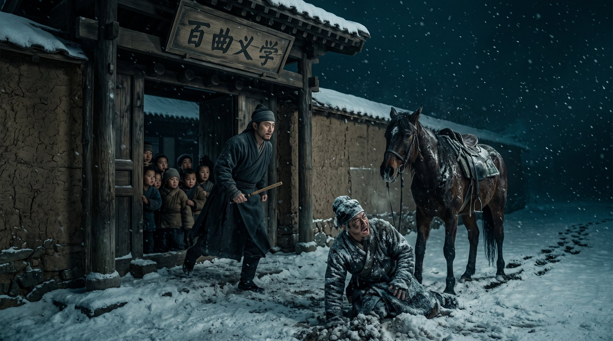

洪武的刀

洪武十三年，正月，胡惟庸死了。
消息传到百曲的时候，火焱正在义学里听孩子们背书。差役是连夜骑马来的，浑身是雪，在学堂门口摔下马背，喘着气喊：“火家……火大郎！京里……出大事了！丞相胡惟庸，谋反，满门抄斩！”
火焱手里的戒尺，啪地掉在了地上。
他早知道会有这一天。洪武十年他报病辞了进京，为的就是躲这一刀。可他没想到，刀来得这么急，这么重。胡惟庸一死，朱元璋顺藤摸瓜，从丞相府一路查到六部，从六部查到地方，查出谋反的、通敌的、结党的——数万人头落地。江南是重灾区，因为胡惟庸是定远人，他的旧部、同年、乡党，多在江南做官。
火家会不会被牵连？火焱心里没有底。火家虽然退了，可火家的名字太响了——江南海路大使，火锻军器司，跟朱元璋在暖阁里喝过酒的人。更重要的是，火家有个改不掉的原罪：蒙古血脉。
正月底，坏消息到底还是来了。
不是朝廷的差役，是冯参将。他已经致仕回乡养老，可还是派了儿子快马赶来，只带了一句话：“有人递了折子，告火家——私通北元，窝藏胡党。”
火焱坐在灶前，把这句话在嘴里嚼了一遍。私通北元。这四个字，是他这辈子最怕被人提起，却又最躲不过去的四个字。火家祖上是蒙古赤氏，他改姓归汉，可血脉改不掉；他跟阿鲁台、帖先生往来二十多年，那本北元册子、那块金印、那半份军饷，至今还压在灶台砖下。
“大郎，”海妹脸色煞白，“那折子……是谁递的？”
“不用问是谁。”火焱说，“问也没用。现在这世道，攀咬一个蒙古血脉的人，是升官最快的路。”
赤伯升坐在灶边，一声不吭，只是把炉火拨得更旺了些。火光映着他满头白发，映着他那张被盐场风蚀了一辈子的脸。
三天后，锦衣卫到了。
不是来抓人的，是来传旨的。旨意只有四个字：“火焱进京。”没有“共议”，没有“一叙”，没有客套。就是四个字。
火焱临走前，把灶台砖下的东西一样一样取出来。黑弓、玉印、海图、铜令、盐牌、册子、铲、砖、箭头、铁珠……十几样，摆了满满一桌。他看了很久，最后只拿了两样：那本北元册子，和帖先生还回来的半份军饷。其余的，他交给了海妹。
“要是这趟回不来，”他说，“这些东西，烧了，别留。火家的孩子，往后只读书，只种田，只烧灶。别再沾刀，别再沾海，别再沾北边。”
海妹没说话，只是把东西一件一件收好，收一件，抹一下眼睛。
应天府的大殿，火焱是第三次进来了。第一次是献密册，第二次是登基前夜的暖阁。这一次，朱元璋坐在龙椅上，不再是那个穿旧布袍的吴国公，而是一个刚刚杀了几万人、眼里已经没有一丝暖意的皇帝。
“火焱。”朱元璋开口了，声音不高，却像一把刀，“有人告你，私通北元，窝藏胡党。你火家祖上，是蒙古赤氏；你跟北元使臣阿鲁台、帖先生，往来二十多年。这些，是不是真的？”
满殿寂静。文武百官噤若寒蝉。
火焱跪下，把头磕在地上。然后他抬起头，一字一句地说：“回陛下。火家祖上是蒙古赤氏——是真的。火家与北元使臣往来二十多年——也是真的。臣，不辩。”
满殿哗然。有的大臣倒吸凉气，有的露出冷笑，有的已经在心里盘算着火家满门抄斩的奏折该怎么写。
“不辩？”朱元璋眯起眼，“你就不怕朕灭了你火家满门？”
“怕。”火焱说，“所以臣把证据，都带来了。”
他从怀里取出那本北元册子，和那半份军饷，双手举过头顶。“这是北元在江南的旧户名册，和帖先生临终前还给火家的半份军饷。火家与北元往来二十年，一桩一件，都在这里。臣今日，全数呈上。”
内臣把东西接过去，呈到御前。朱元璋翻看那本册子，看得很慢，很仔细。大殿里静得连一根针落地都听得见。
“火家与北元往来，”火焱继续说，声音平稳，“是为买卖，是为传信，是为给北边的旧户留一条活路。但火家从未通敌，从未谋反。”他顿了顿，“火家若想反，二十年前，就不会把那张江南海路全图，亲手献给陛下。”
朱元璋合上册子，抬起头，看着跪在殿下的火焱。看了很久。
然后他笑了。不是冷笑，不是狞笑，是一种火焱从没见过的、说不清道不明的笑。
“起来吧。”朱元璋说，“朕从来没怀疑过你火家。”他站起身，走到殿前，看着满殿的文武，“火焱的蒙古血脉，朕二十年前就知道。他跟北元往来，朕二十年前也知道。朕留他火家到今天，不是忘了这茬——是朕要看看，一个改了姓、归了汉、烧了灶的蒙古人，到底能不能在朕的眼皮底下，活成一个真正的汉人。”
他转过身，看着火焱：“你今天的坦白，比朕二十年来看到的任何忠心都值钱。火家，朕保了。可有一条——”
“请陛下明示。”
“从今往后，火家子孙，永世不得入京，不得为官，不得领兵。只许在百曲，种田、读书、烧灶。”朱元璋说，声音冷了下来，“这是朕给你的最后一道旨。火家，退得干干净净，朕才用得安心。”
火焱再次跪下，重重地磕了一个头：“臣，领旨。”
出宫的时候，天又下起了雪。火焱站在应天府的城门前，回头看了一眼那座大殿。他知道，这一走，火家就再也回不来了。可他也知道，这一走，火家就真的安全了——不是靠刀，不是靠权，是靠“退得干干净净”这五个字。
海妹在百曲的码头等他。船靠岸的时候，天已经黑了。海妹站在雪地里，远远看见火焱从船上下来，忽然就哭了。
“回来了？”她问。
“回来了。”火焱说，“以后，火家就只在百曲了。种田，读书，烧灶。”
“值吗？”海妹问。
火焱看着百曲漫天的灶烟，看着义学里亮着的灯，看着雪地里那口烧了几十年的老灶。
“值。”他说，“官不要了，海路不要了，铁器不要了——可火家的火，保住了。”
雪落下来，落在他斑白的鬓角上，落在百曲的灶烟里，也落在那个九岁那年指着灶膛说“姓火”的孩子，如今已经佝偻的背影上。
洪武的刀，悬了三年，终于收了回去。
不是火家躲过了刀，是火家，自己先放下了刀。
· 第五卷《祖境》 ·